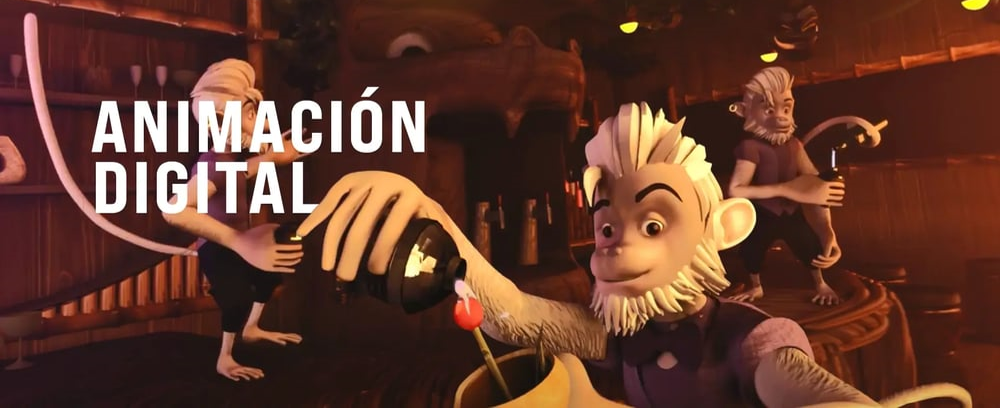

Animación Digital
Autor: Marcela Jiménez Méndez

Definición:
La animación digital es un campo fascinante que combina arte y tecnología para crear imágenes en movimiento. Se utiliza en diversas industrias, como el cine, los videojuegos y la publicidad.